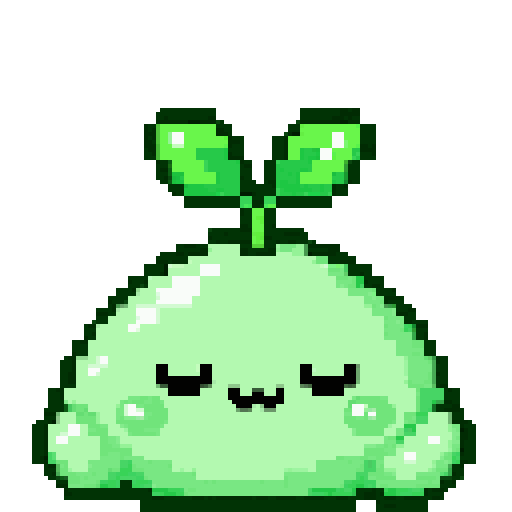

Handcrafted
Every sprite and animation is original pixel art drawn frame by frame in Pixelorama.
Early public alpha · Fedora + GNOME
Meet Mochi — a handcrafted pixel companion who lives on your Linux desktop, notices the rhythm of what you're doing, and responds with small bits of personality.
What is Mochi?
Mochi is a small Linux desktop companion built to feel present without demanding your attention. He idles, wanders, reacts to broad desktop activity, and settles back down when the moment passes — more like a tiny coworker than a widget.
Every sprite and animation is original pixel art drawn frame by frame in Pixelorama.
Local desktop signals help Mochi notice broad activity without needing to read the words you type.
Python, GTK4, PyGObject, Cairo, GNOME, Wayland, and XWayland are part of Mochi's natural habitat.
Feels alive
Mochi is built around states and transitions instead of a pile of disconnected animations. Typing, terminal work, music, video, direct interaction, sleep, and idle time can each become a little moment — then Mochi finds his way back to normal.
The goal is simple: enough awareness to feel responsive, but never so much motion or chatter that Mochi competes with the work on your screen.
Quiet breathing, blinking, wandering, and occasional thoughts.
Pick him up, drag him around, click, hover, and see how he responds.

Put Mochi to sleep when you want an even quieter desktop.
Ambient reactions
The public alpha already includes a growing set of contextual and direct reactions. They are designed to be subtle, interruptible, and easy to leave alone.
Mochi can notice typing activity and occasionally react without reading the text itself.
When terminal work becomes the focus, Mochi can settle into his own little computer moment.
Playing music can trigger a dance state instead of another generic idle loop.
Supported media context lets Mochi hang out while you watch without treating every browser as video.
Send Mochi to the nearest screen edge and let him wander around the perimeter.
Clicks, double-clicks, hovering, pickup, dragging, dropping, sleep, and wake all have their own responses.
Mochi Sense
Mochi's ambient system is intentionally built around broad local signals: things like typing activity, app categories, media state, and direct interaction. The point is to understand enough context to choose a fitting reaction — not to inspect the content of your work.
A meaningful local activity starts.
Mochi enters the matching state without restarting it over and over.
When the context ends, Mochi returns to the right idle behavior.
Linux first
Mochi isn't a web widget floating in a browser tab. The current alpha is a Python + GTK4 desktop application focused on Fedora, GNOME, and Wayland, using XWayland where GNOME's native Wayland restrictions require it.
Public alpha
Mochi is ready for people to play with, but this is still an early release. Different monitor layouts, scaling setups, desktop environments, and application combinations may uncover rough edges. Bug reports and thoughtful feature ideas are genuinely useful right now.
Early public alpha
Fedora + GNOME on Wayland is the actively tested environment. The installer handles Fedora dependencies, Mochi's private Python environment, the GNOME helper, and an app-grid launcher.
git clone https://github.com/miflow13/mochi-desktop.git
cd mochi-desktop && ./install.sh
Launch Mochi from the GNOME app grid. Right-click him for Sleep/Wake, Edge roam, Stay put, Quick Start, and Close.
A few pixels. A little personality. 🌱
Hand-drawn, Linux-native, and happiest hanging out nearby.